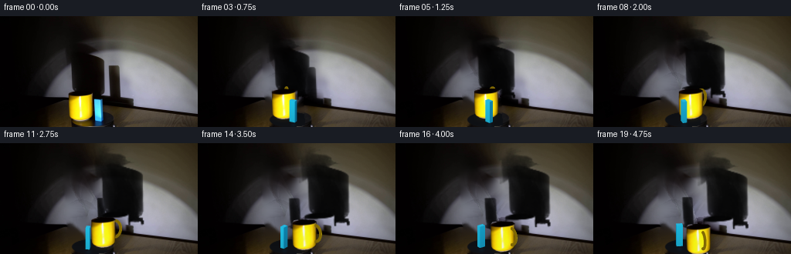
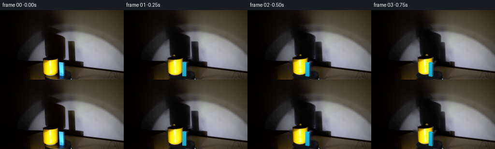
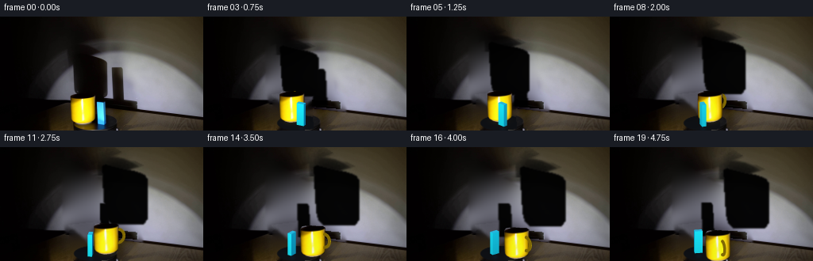
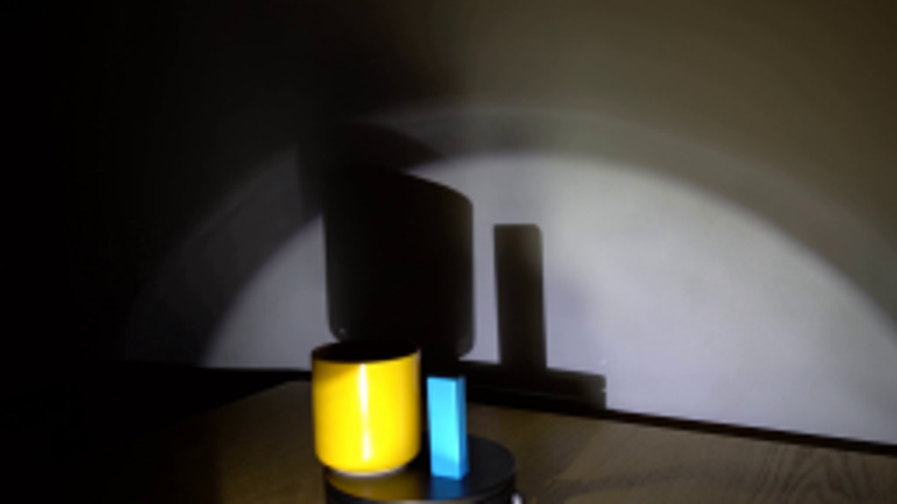
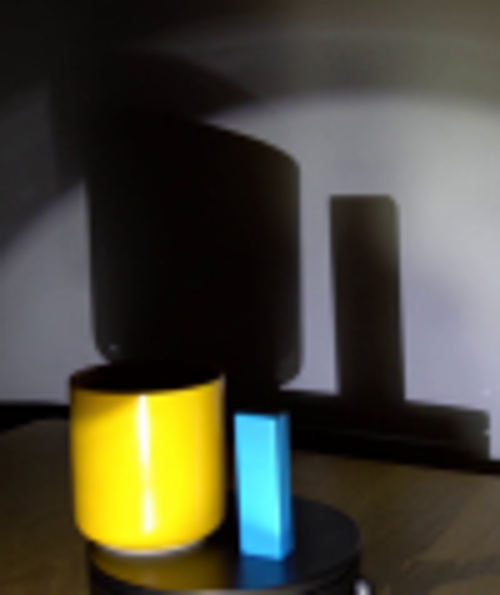
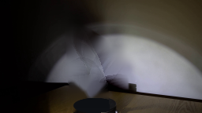
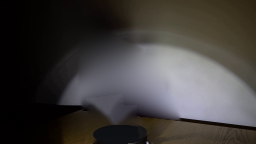
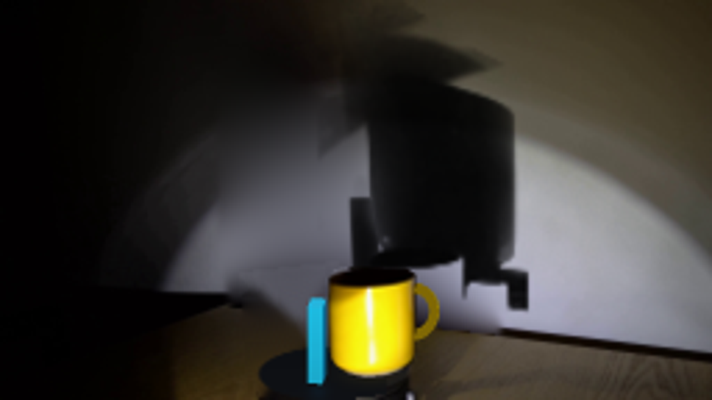
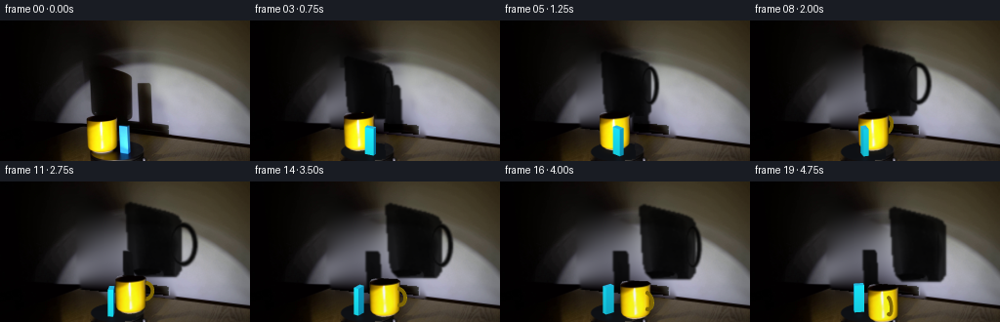
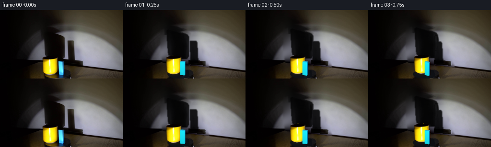

CODING AGENTS AS PIXEL WORLD MODELS
traex/GPT-6.1-Sol · 0081
点击播放 · 原生 RGB 像素
逐轮保存的候选
回放视频、检查图与代码变化。
每份候选均可单独播放。实际图片检查记录在下方工具轨迹中。
候选 01播放与检查图
点击播放 · 原生 RGB 像素

展开代码变化
--- 上一保存版本
+++ 本次保存版本
@@ -0,0 +1,229 @@
+from pathlib import Path
+import math
+import numpy as np
+from PIL import Image, ImageDraw
+import cv2
+from scipy.interpolate import RBFInterpolator
+from scipy.ndimage import gaussian_filter
+import artifact_io
+
+ROOT=Path(__file__).resolve().parent
+W,H=256,144
+S=3
+original=np.array(Image.open(ROOT/'first_frame.png').convert('RGB'))
+
+def polygon_mask(points):
+ m=np.zeros((H,W),np.uint8)
+ cv2.fillPoly(m,[np.rint(points).astype(np.int32)],255)
+ return m/255.
+
+# The static photographed environment is retained; only the occupied regions
+# of the wall and turntable are reconstructed.
+body_shadow_poly=[(83,31),(95,30),(113,39),(115,45),(128,49),(136,55),(137,102),(132,108),(92,107),(88,96)]
+box_shadow_poly=[(140,62),(155,62),(158,67),(160,111),(139,111)]
+shadow_region=np.maximum(polygon_mask(body_shadow_poly),polygon_mask(box_shadow_poly))
+shadow_region=cv2.dilate(shadow_region.astype(np.float32),np.ones((5,5),np.uint8))
+yy,xx=np.mgrid[:H,:W]
+wall=yy<(101.5+.104*xx)
+# Smooth thin-plate interpolation from only visible wall pixels.
+valid=wall & (shadow_region<.01)
+valid &= ~((xx>84)&(xx<137)&(yy>93))
+valid &= ~((xx>129)&(xx<175)&(yy>101))
+valid &= ((xx%3==0)&(yy%3==0))
+coords=np.column_stack([xx[valid],yy[valid]])/100
+samples=original[valid].astype(float)
+rbf=RBFInterpolator(coords,samples,kernel='thin_plate_spline',smoothing=.002,neighbors=100)
+wall_fill=rbf(np.column_stack([xx.ravel(),yy.ravel()])/100).reshape(H,W,3)
+wall_fill=np.clip(wall_fill,0,255)
+replace=gaussian_filter(shadow_region,1.0)*wall
+bg=original.astype(float)*(1-replace[...,None])+wall_fill*replace[...,None]
+# Recover the transmission pattern in the actual wall shadow.
+transmission=np.clip(1-(original.astype(float).mean(2)+1)/(wall_fill.mean(2)+1),0,1)
+transmission*=shadow_region*wall
+# Divide the two original shadows so their motions can be independent.
+smug=transmission.copy();smug[:,139:]=0
+sbox=transmission.copy();sbox[:,:139]=0
+# Backdrop hidden by the objects: dark top of the turntable and tabletop.
+object_region=polygon_mask([(86,98),(121,94),(124,105),(136,105),(138,141),(118,144),(93,142),(88,131)])
+# Inpaint is only used for the small static platter/table patch, not large wall shadows.
+masked=(object_region*255).astype(np.uint8)
+under=cv2.inpaint(np.uint8(np.clip(bg,0,255)),masked,5,cv2.INPAINT_TELEA).astype(float)
+bg=bg*(1-object_region[...,None])+under*object_region[...,None]
+# Analytic black elliptical top restores the region covered by the mug and block.
+plate=((xx-119.8)/28.0)**2+((yy-134.1)/10.1)**2
+inside=(plate<1)&(yy>117)
+plate_rgb=np.stack([13+.12*(yy-128),15+.12*(yy-128),19+.12*(yy-128)],axis=-1)
+# Retain the photographed perimeter and fixed motor base.
+blend=np.clip((1-plate)*10,0,1)*object_region
+bg=bg*(1-blend[...,None])+plate_rgb*blend[...,None]
+Image.fromarray(np.uint8(np.clip(bg,0,255))).save(ROOT/'.tmp/background.png')
+
+# Photographic mug surface, maintained under rigid orbital translation.
+# Exact silhouette, including black mouth and the thin ceramic base ring.
+mp=[(89,100),(91,97.5),(98,96),(108,96.5),(117,97),(120,99),(120,126.8),(118.6,131),(115,133.4),(109,135.4),(102,136),(96,134.5),(91.8,132),(89.8,129),(89,122)]
+mi=Image.new('L',(W*S,H*S));d=ImageDraw.Draw(mi)
+d.polygon([(round(x*S),round(y*S)) for x,y in mp],fill=255)
+mug_alpha=np.array(mi).astype(float)/255
+# Resampling once at high resolution retains the photograph's soft optical edges.
+photo=cv2.resize(original,(W*S,H*S),interpolation=cv2.INTER_CUBIC).astype(float)
+
+C=np.array([119.,134.])
+MUG=np.array([-15.,-12.])
+BOX=np.array([7.,4.])
+K=.4
+
+def rotate(p,a):
+ c,s=np.cos(a),np.sin(a)
+ x,y=p
+ return np.array([c*x-s*y,s*x+c*y])
+
+def project(v):
+ v=np.asarray(v)
+ return np.column_stack([C[0]+v[:,0],C[1]+K*v[:,1]-v[:,2]])*S
+
+# A small local triangle rasterizer with orthographic depth interpolation.
+class Raster:
+ def __init__(self,back):
+ self.im=cv2.resize(back,(W*S,H*S),interpolation=cv2.INTER_CUBIC).astype(float)
+ self.depth=np.full((H*S,W*S),-1.e10)
+ def tri(self,vs,col):
+ p=project(vs)
+ depth=vs[:,1]+K*vs[:,2]
+ x0=max(0,int(np.floor(p[:,0].min())));x1=min(W*S-1,int(np.ceil(p[:,0].max())))
+ y0=max(0,int(np.floor(p[:,1].min())));y1=min(H*S-1,int(np.ceil(p[:,1].max())))
+ if x1<x0 or y1<y0:return
+ y,x=np.mgrid[y0:y1+1,x0:x1+1]; x=x+.5;y=y+.5
+ den=(p[1,1]-p[2,1])*(p[0,0]-p[2,0])+(p[2,0]-p[1,0])*(p[0,1]-p[2,1])
+ if abs(den)<1e-8:return
+ a=((p[1,1]-p[2,1])*(x-p[2,0])+(p[2,0]-p[1,0])*(y-p[2,1]))/den
+ b=((p[2,1]-p[0,1])*(x-p[2,0])+(p[0,0]-p[2,0])*(y-p[2,1]))/den
+ c=1-a-b
+ z=a*depth[0]+b*depth[1]+c*depth[2]
+ use=(a>=-.001)&(b>=-.001)&(c>=-.001)&(z>self.depth[y0:y1+1,x0:x1+1])
+ self.depth[y0:y1+1,x0:x1+1][use]=z[use]
+ self.im[y0:y1+1,x0:x1+1][use]=col
+ def quad(self,v,col):
+ v=np.asarray(v)
+ self.tri(v[[0,1,2]],col);self.tri(v[[0,2,3]],col)
+ def mug(self,p,a):
+ # Cylinder is rotationally symmetric: its photographed shading remains
+ # light-aligned, rather than revolving with the ceramic material.
+ dx=p[0]-MUG[0];dy=K*(p[1]-MUG[1])
+ mat=np.float32([[1,0,dx*S],[0,1,dy*S]])
+ alpha=cv2.warpAffine(mug_alpha,mat,(W*S,H*S),flags=cv2.INTER_LINEAR)
+ tex=cv2.warpAffine(photo,mat,(W*S,H*S),flags=cv2.INTER_CUBIC)
+ ys,xs=np.mgrid[:H*S,:W*S]
+ xc=(xs/S-(C[0]+p[0]))/15.3
+ yf=p[1]+15.3*np.sqrt(np.clip(1-xc*xc,0,1))
+ z=(C[1]+K*yf-ys/S)
+ dep=yf+K*z
+ use=(alpha>.001)&(dep>self.depth)
+ aa=alpha[...,None]*use[...,None]
+ # Slow change in lamp distance: warm, saturated yellow remains bright.
+ gain=.98+.02*np.cos(a)
+ tex=np.clip(tex*gain,0,255)
+ self.im=self.im*(1-aa)+tex*aa
+ self.depth[use]=dep[use]
+ def block(self,p,a):
+ # Tall rectangular blue block with separate cyan front and darker side.
+ w,d,h=8.1,5.5,27.5
+ c,s=np.cos(a),np.sin(a)
+ rot=np.array([[c,-s],[s,c]])
+ local=np.array([[-w/2,-d/2],[w/2,-d/2],[w/2,d/2],[-w/2,d/2]])
+ xy=local@rot.T+p
+ bot=np.column_stack([xy,np.zeros(4)])
+ top=np.column_stack([xy,np.full(4,h)])
+ lamp=np.array([-45.,95.,62.])
+ # Reference face luminances from the photographed blue object.
+ for i in range(4):
+ j=(i+1)%4
+ tangent=xy[j]-xy[i]
+ n=np.array([tangent[1],-tangent[0],0.]);n/=np.linalg.norm(n)
+ centre=(bot[i]+top[j])/2
+ l=lamp-centre;l/=np.linalg.norm(l)
+ br=max(0,np.dot(n,l))
+ col=np.array([8,113,155]) + br*np.array([25,85,80])
+ # Face's vertical gradient is subtle and gives it physical material.
+ for z0,z1 in zip(np.linspace(0,h,15)[:-1],np.linspace(0,h,15)[1:]):
+ q=np.array([[*xy[i],z0],[*xy[j],z0],[*xy[j],z1],[*xy[i],z1]])
+ self.quad(q,np.clip(col*(.91+.1*(z0/h)),0,255))
+ self.quad(top,np.array([38,181,221]))
+ def handle(self,p,a):
+ # The handle begins behind the body and is revealed as the platter turns.
+ direction=rotate(np.array([-.25,-.9682458]),a)
+ centre=p+direction*15.4
+ # Elliptical tubular loop in a radial vertical plane.
+ us=np.linspace(0,2*np.pi,57);vs=np.linspace(0,2*np.pi,13)
+ rings=[]
+ tangent=np.array([-direction[1],direction[0]])
+ for u in us:
+ ring=[]
+ for v in vs:
+ radial=7.7*np.cos(u)+1.9*np.cos(v)*np.cos(u)
+ z=17+10.5*np.sin(u)+1.9*np.cos(v)*np.sin(u)
+ xy=centre+direction*radial+tangent*1.9*np.sin(v)
+ ring.append([*xy,z])
+ rings.append(ring)
+ rings=np.array(rings)
+ for i in range(len(us)-1):
+ for j in range(len(vs)-1):
+ q=np.array([rings[i,j],rings[i+1,j],rings[i+1,j+1],rings[i,j+1]])
+ n=np.cross(q[1]-q[0],q[3]-q[0]); norm=np.linalg.norm(n)
+ if norm<1e-10:continue
+ n/=norm
+ l=np.array([-45,95,55])-q.mean(0);l/=np.linalg.norm(l)
+ br=max(0,np.dot(n,l))
+ self.quad(q,np.array([128,104,4])+br*np.array([123,131,15]))
+
+# Shadow transmission is warped from the first-frame photograph. This preserves
+# penumbra, warm residual illumination, and the wall's texture without inventing
+# a new lamp or background.
+def moving_shadows(a,pm,pb):
+ dm=pm-MUG;db=pb-BOX
+ out=bg.copy()
+ shadows=[]
+ for source,delta,p0,p in [(smug,dm,MUG,pm),(sbox,db,BOX,pb)]:
+ # Point-source enlargement changes smoothly with distance to the lamp.
+ scale=(120-p0[0])/(120-p[0])
+ scale=np.clip(scale,.82,1.24)
+ dx=1.55*delta[0]+.48*delta[1]
+ dy=.24*delta[1]-.18*delta[0]
+ pivot=np.array([113.,106.]) if source is smug else np.array([150.,108.])
+ # Blue block's rectangular silhouette changes width as its four faces turn.
+ sx=scale
+ if source is sbox:
+ sx*=abs(np.cos(a))+.67*abs(np.sin(a))
+ # The mug body is circular; the high left handle shadow turns around it.
+ mat=np.array([[sx,0,dx+pivot[0]*(1-sx)], [0,scale,dy+pivot[1]*(1-scale)]],np.float32)
+ sh=cv2.warpAffine(source,mat,(W,H),flags=cv2.INTER_LINEAR)
+ shadows.append(sh)
+ sh=np.maximum(shadows[0],shadows[1])
+ sh=np.clip(sh,0,.985)*wall
+ # Shadows transmit a little warm ambient light rather than absolute black.
+ out*=1-sh[...,None]
+ return out
+
+
+def generate():
+ frames=[original.copy()]
+ for i in range(1,20):
+ a=np.deg2rad(36)*(i/4)
+ pm=rotate(MUG,a);pb=rotate(BOX,a)
+ back=moving_shadows(a,pm,pb)
+ # Dim colored reflections remain registered to their corresponding object.
+ y,x=np.mgrid[:H,:W]
+ refl=np.exp(-((x-(C[0]+pm[0]))/10)**2-((y-(C[1]+K*pm[1]+5))/4)**2)*inside
+ back += refl[...,None]*np.array([20,15,0])
+ refl=np.exp(-((x-(C[0]+pb[0]))/3.5)**2-((y-(C[1]+K*pb[1]+4))/3)**2)*inside
+ back += refl[...,None]*np.array([0,8,13])
+ ras=Raster(back)
+ ras.handle(pm,a)
+ ras.block(pb,a)
+ ras.mug(pm,a)
+ result=cv2.resize(np.clip(ras.im,0,255),(W,H),interpolation=cv2.INTER_AREA)
+ frames.append(np.uint8(np.rint(result)))
+ frames=np.array(frames,np.uint8)
+ artifact_io.save(frames,ROOT)
+ return frames
+if __name__=='__main__':
+ generate()
候选 02播放与检查图
点击播放 · 原生 RGB 像素


展开代码变化
--- 上一保存版本
+++ 本次保存版本
@@ -19,28 +19,24 @@
# The static photographed environment is retained; only the occupied regions
# of the wall and turntable are reconstructed.
-body_shadow_poly=[(83,31),(95,30),(113,39),(115,45),(128,49),(136,55),(137,102),(132,108),(92,107),(88,96)]
-box_shadow_poly=[(140,62),(155,62),(158,67),(160,111),(139,111)]
+body_shadow_poly=[(81,25),(94,25),(121,43),(139,51),(142,109),(132,116),(87,112),(81,86)]
+box_shadow_poly=[(137,58),(159,58),(163,104),(174,104),(176,121),(135,120)]
shadow_region=np.maximum(polygon_mask(body_shadow_poly),polygon_mask(box_shadow_poly))
-shadow_region=cv2.dilate(shadow_region.astype(np.float32),np.ones((5,5),np.uint8))
+shadow_region=cv2.dilate(shadow_region.astype(np.float32),np.ones((7,7),np.uint8))
yy,xx=np.mgrid[:H,:W]
wall=yy<(101.5+.104*xx)
-# Smooth thin-plate interpolation from only visible wall pixels.
valid=wall & (shadow_region<.01)
-valid &= ~((xx>84)&(xx<137)&(yy>93))
-valid &= ~((xx>129)&(xx<175)&(yy>101))
valid &= ((xx%3==0)&(yy%3==0))
coords=np.column_stack([xx[valid],yy[valid]])/100
samples=original[valid].astype(float)
-rbf=RBFInterpolator(coords,samples,kernel='thin_plate_spline',smoothing=.002,neighbors=100)
+rbf=RBFInterpolator(coords,samples,kernel='thin_plate_spline',smoothing=.02)
wall_fill=rbf(np.column_stack([xx.ravel(),yy.ravel()])/100).reshape(H,W,3)
wall_fill=np.clip(wall_fill,0,255)
-replace=gaussian_filter(shadow_region,1.0)*wall
+replace=gaussian_filter(shadow_region,1.3)*wall
bg=original.astype(float)*(1-replace[...,None])+wall_fill*replace[...,None]
-# Recover the transmission pattern in the actual wall shadow.
+# Get the clean silhouettes with the measured penumbra from the reference.
transmission=np.clip(1-(original.astype(float).mean(2)+1)/(wall_fill.mean(2)+1),0,1)
transmission*=shadow_region*wall
-# Divide the two original shadows so their motions can be independent.
smug=transmission.copy();smug[:,139:]=0
sbox=transmission.copy();sbox[:,:139]=0
# Backdrop hidden by the objects: dark top of the turntable and tabletop.
@@ -160,7 +156,7 @@
ring=[]
for v in vs:
radial=7.7*np.cos(u)+1.9*np.cos(v)*np.cos(u)
- z=17+10.5*np.sin(u)+1.9*np.cos(v)*np.sin(u)
+ z=16+8.4*np.sin(u)+1.9*np.cos(v)*np.sin(u)
xy=centre+direction*radial+tangent*1.9*np.sin(v)
ring.append([*xy,z])
rings.append(ring)
候选 03播放与检查图
候选 04播放与检查图
点击播放 · 原生 RGB 像素

展开代码变化
--- 上一保存版本
+++ 本次保存版本
@@ -34,11 +34,23 @@
wall_fill=np.clip(wall_fill,0,255)
replace=gaussian_filter(shadow_region,1.3)*wall
bg=original.astype(float)*(1-replace[...,None])+wall_fill*replace[...,None]
-# Get the clean silhouettes with the measured penumbra from the reference.
+# Separate upright-object silhouettes from the static horizontal platform shadow.
transmission=np.clip(1-(original.astype(float).mean(2)+1)/(wall_fill.mean(2)+1),0,1)
transmission*=shadow_region*wall
-smug=transmission.copy();smug[:,139:]=0
-sbox=transmission.copy();sbox[:,:139]=0
+body_mask=polygon_mask([(89,44),(92,42),(124,50),(132,53),(135,57),(135,98),(131,103),(99,103),(94,98),(92,89)])
+body_mask=gaussian_filter(body_mask,.65)
+smug=body_mask*.97
+# Original upper-left, enlarged handle silhouette has a softer optical edge.
+upper=transmission.copy()
+upper[:,137:]=0
+upper[yy>53]=0
+smug=np.maximum(smug,upper)
+sbox=polygon_mask([(141,64),(153,64),(155,67),(157,111),(142,111)])
+sbox=gaussian_filter(sbox,.75)*.965
+# The large platter's horizontal wall shadow is fixed by its circular shape.
+static_bar=polygon_mask([(130,105),(170,107),(173,109),(173,116),(135,113)])
+static_bar*=wall
+bg=bg*(1-static_bar[...,None])+original*static_bar[...,None]
# Backdrop hidden by the objects: dark top of the turntable and tabletop.
object_region=polygon_mask([(86,98),(121,94),(124,105),(136,105),(138,141),(118,144),(93,142),(88,131)])
# Inpaint is only used for the small static platter/table patch, not large wall shadows.
@@ -122,14 +134,14 @@
self.depth[use]=dep[use]
def block(self,p,a):
# Tall rectangular blue block with separate cyan front and darker side.
- w,d,h=8.1,5.5,27.5
+ w,d,h=10.0,5.5,27.5
c,s=np.cos(a),np.sin(a)
rot=np.array([[c,-s],[s,c]])
local=np.array([[-w/2,-d/2],[w/2,-d/2],[w/2,d/2],[-w/2,d/2]])
xy=local@rot.T+p
bot=np.column_stack([xy,np.zeros(4)])
top=np.column_stack([xy,np.full(4,h)])
- lamp=np.array([-45.,95.,62.])
+ lamp=np.array([-45.,130.,62.])
# Reference face luminances from the photographed blue object.
for i in range(4):
j=(i+1)%4
@@ -138,7 +150,7 @@
centre=(bot[i]+top[j])/2
l=lamp-centre;l/=np.linalg.norm(l)
br=max(0,np.dot(n,l))
- col=np.array([8,113,155]) + br*np.array([25,85,80])
+ col=np.array([6,111,160]) + br*np.array([20,132,99])
# Face's vertical gradient is subtle and gives it physical material.
for z0,z1 in zip(np.linspace(0,h,15)[:-1],np.linspace(0,h,15)[1:]):
q=np.array([[*xy[i],z0],[*xy[j],z0],[*xy[j],z1],[*xy[i],z1]])
候选 05播放与检查图
点击播放 · 原生 RGB 像素

展开代码变化
--- 上一保存版本
+++ 本次保存版本
@@ -39,14 +39,14 @@
transmission*=shadow_region*wall
body_mask=polygon_mask([(89,44),(92,42),(124,50),(132,53),(135,57),(135,98),(131,103),(99,103),(94,98),(92,89)])
body_mask=gaussian_filter(body_mask,.65)
-smug=body_mask*.97
+smug=body_mask*np.clip(transmission,.83,.985)
# Original upper-left, enlarged handle silhouette has a softer optical edge.
upper=transmission.copy()
upper[:,137:]=0
upper[yy>53]=0
-smug=np.maximum(smug,upper)
+initial_handle=upper.copy()
sbox=polygon_mask([(141,64),(153,64),(155,67),(157,111),(142,111)])
-sbox=gaussian_filter(sbox,.75)*.965
+sbox=gaussian_filter(sbox,.75)*np.clip(transmission,.87,.98)
# The large platter's horizontal wall shadow is fixed by its circular shape.
static_bar=polygon_mask([(130,105),(170,107),(173,109),(173,116),(135,113)])
static_bar*=wall
@@ -56,6 +56,7 @@
# Inpaint is only used for the small static platter/table patch, not large wall shadows.
masked=(object_region*255).astype(np.uint8)
under=cv2.inpaint(np.uint8(np.clip(bg,0,255)),masked,5,cv2.INPAINT_TELEA).astype(float)
+under[wall]=wall_fill[wall]
bg=bg*(1-object_region[...,None])+under*object_region[...,None]
# Analytic black elliptical top restores the region covered by the mug and block.
plate=((xx-119.8)/28.0)**2+((yy-134.1)/10.1)**2
@@ -190,13 +191,28 @@
dm=pm-MUG;db=pb-BOX
out=bg.copy()
shadows=[]
- for source,delta,p0,p in [(smug,dm,MUG,pm),(sbox,db,BOX,pb)]:
+ mshadow=smug.copy()
+ # A ring-shaped handle shadow joins the round body shadow, with its
+ # projected radial offset determined by the same clockwise turn.
+ handle_amount=max(0,np.sin(a))
+ left_amount=max(0,np.cos(a))**2
+ mshadow=np.maximum(mshadow,initial_handle*left_amount)
+ if handle_amount>.03:
+ hmask=Image.new('L',(W*S,H*S)); hd=ImageDraw.Draw(hmask)
+ centre_x=128+9*handle_amount
+ centre_y=77-4*max(0,np.cos(a))
+ rx=12*handle_amount; ry=18
+ hd.ellipse(((centre_x-rx)*S,(centre_y-ry)*S,(centre_x+rx)*S,(centre_y+ry)*S),outline=242,width=4*S)
+ hm=cv2.resize(np.array(hmask).astype(float)/255,(W,H),interpolation=cv2.INTER_AREA)
+ hm=gaussian_filter(hm,.7)
+ mshadow=np.maximum(mshadow,hm)
+ for source,delta,p0,p in [(mshadow,dm,MUG,pm),(sbox,db,BOX,pb)]:
# Point-source enlargement changes smoothly with distance to the lamp.
scale=(120-p0[0])/(120-p[0])
scale=np.clip(scale,.82,1.24)
dx=1.55*delta[0]+.48*delta[1]
dy=.24*delta[1]-.18*delta[0]
- pivot=np.array([113.,106.]) if source is smug else np.array([150.,108.])
+ pivot=np.array([113.,106.]) if source is mshadow else np.array([150.,108.])
# Blue block's rectangular silhouette changes width as its four faces turn.
sx=scale
if source is sbox:
候选 06播放与检查图
点击播放 · 原生 RGB 像素

展开代码变化
代码未变化；重新保存了产物。
可观测工具轨迹
实际执行的命令与返回图片。
命令 1exit 0
/bin/bash -lc "ls -la && cat prompt.txt && printf '\\n---RULES---\\n' && cat GENERATION_RULES.md"
命令 2exit 0
/bin/bash -lc "cat artifact_io.py && python - <<'PY'
from PIL import Image
im=Image.open('first_frame.png'); im.resize((1024,576)).save('.tmp/large.png')
PY"命令 3exit 0
/bin/bash -lc "python - <<'PY'
from PIL import Image
im=Image.open('first_frame.png'); im.crop((75,25,175,144)).resize((500,595)).save('.tmp/crop.png')
import importlib.util
for name in ['numpy','scipy','cv2']:
print(name, bool(importlib.util.find_spec(name)))
PY"命令 4exit 0
/bin/bash -lc "python - <<'PY'
from PIL import Image
im=Image.open('first_frame.png');im.resize((1024,576),Image.Resampling.NEAREST).save('.tmp/nearest.png')
PY"命令 5exit 0
/bin/bash -lc "python - <<'PY'
from PIL import Image
import numpy as np
im=np.array(Image.open('first_frame.png'))
for y in range(94,143):
xs=np.where((im[y,:,0]>95)&(im[y,:,1]>75)&(im[y,:,2]<80))[0]
xs=xs[(xs>70)&(xs<130)]
if len(xs):print(y,xs[0],xs[-1],im[y,104].tolist())
PY"命令 6exit 0
/bin/bash -lc "cat > generate.py <<'PY'
from pathlib import Path
import math
import numpy as np
from PIL import Image, ImageDraw
import cv2
from scipy.interpolate import RBFInterpolator
from scipy.ndimage import gaussian_filter
import artifact_io
ROOT=Path(__file__).resolve().parent
W,H=256,144
S=3
original=np.array(Image.open(ROOT/'first_frame.png').convert('RGB'))
def polygon_mask(points):
m=np.zeros((H,W),np.uint8)
cv2.fillPoly(m,[np.rint(points).astype(np.int32)],255)
return m/255.
# The static photographed environment is retained; only the occupied regions
# of the wall and turntable are reconstructed.
body_shadow_poly=[(83,31),(95,30),(113,39),(115,45),(128,49),(136,55),(137,102),(132,108),(92,107),(88,96)]
box_shadow_poly=[(140,62),(155,62),(158,67),(160,111),(139,111)]
shadow_region=np.maximum(polygon_mask(body_shadow_poly),polygon_mask(box_shadow_poly))
shadow_region=cv2.dilate(shadow_region.astype(np.float32),np.ones((5,5),np.uint8))
yy,xx=np.mgrid[:H,:W]
wall=yy<(101.5+.104*xx)
# Smooth thin-plate interpolation from only visible wall pixels.
valid=wall & (shadow_region<.01)
valid &= ~((xx>84)&(xx<137)&(yy>93))
valid &= ~((xx>129)&(xx<175)&(yy>101))
valid &= ((xx%3==0)&(yy%3==0))
coords=np.column_stack([xx[valid],yy[valid]])/100
samples=original[valid].astype(float)
rbf=RBFInterpolator(coords,samples,kernel='thin_plate_spline',smoothing=.002,neighbors=100)
wall_fill=rbf(np.column_stack([xx.ravel(),yy.ravel()])/100).reshape(H,W,3)
wall_fill=np.clip(wall_fill,0,255)
replace=gaussian_filter(shadow_region,1.0)*wall
bg=original.astype(float)*(1-replace[...,None])+wall_fill*replace[...,None]
# Recover the transmission pattern in the actual wall shadow.
transmission=np.clip(1-(original.astype(float).mean(2)+1)/(wall_fill.mean(2)+1),0,1)
transmission*=shadow_region*wall
# Divide the two original shadows so their motions can be independent.
smug=transmission.copy();smug[:,139:]=0
sbox=transmission.copy();sbox[:,:139]=0
# Backdrop hidden by the objects: dark top of the turntable and tabletop.
object_region=polygon_mask([(86,98),(121,94),(124,105),(136,105),(138,141),(118,144),(93,142),(88,131)])
# Inpaint is only used for the small static platter/table patch, not large wall shadows.
masked=(object_region*255).astype(np.uint8)
under=cv2.inpaint(np.uint8(np.clip(bg,0,255)),masked,5,cv2.INPAINT_TELEA).astype(float)
bg=bg*(1-object_region[...,None])+under*object_region[...,None]
# Analytic black elliptical top restores the region covered by the mug and block.
plate=((xx-119.8)/28.0)**2+((yy-134.1)/10.1)**2
inside=(plate<1)&(yy>117)
plate_rgb=np.stack([13+.12*(yy-128),15+.12*(yy-128),19+.12*(yy-128)],axis=-1)
# Retain the photographed perimeter and fixed motor base.
blend=np.clip((1-plate)*10,0,1)*object_region
bg=bg*(1-blend[...,None])+plate_rgb*blend[...,None]
Image.fromarray(np.uint8(np.clip(bg,0,255))).save(ROOT/'.tmp/background.png')
# Photographic mug surface, maintained under rigid orbital translation.
# Exact silhouette, including black mouth and the thin ceramic base ring.
mp=[(89,100),(91,97.5),(98,96),(108,96.5),(117,97),(120,99),(120,126.8),(118.6,131),(115,133.4),(109,135.4),(102,136),(96,134.5),(91.8,132),(89.8,129),(89,122)]
mi=Image.new('L',(W*S,H*S));d=ImageDraw.Draw(mi)
d.polygon([(round(x*S),round(y*S)) for x,y in mp],fill=255)
mug_alpha=np.array(mi).astype(float)/255
# Resampling once at high resolution retains the photograph's soft optical edges.
photo=cv2.resize(original,(W*S,H*S),interpolation=cv2.INTER_CUBIC).astype(float)
C=np.array([119.,134.])
MUG=np.array([-15.,-12.])
BOX=np.array([7.,4.])
K=.4
def rotate(p,a):
c,s=np.cos(a),np.sin(a)
x,y=p
return np.array([c*x-s*y,s*x+c*y])
def project(v):
v=np.asarray(v)
return np.column_stack([C[0]+v[:,0],C[1]+K*v[:,1]-v[:,2]])*S
# A small local triangle rasterizer with orthographic depth interpolation.
class Raster:
def __init__(self,back):
self.im=cv2.resize(back,(W*S,H*S),interpolation=cv2.INTER_CUBIC).astype(float)
self.depth=np.full((H*S,W*S),-1.e10)
def tri(self,vs,col):
p=project(vs)
depth=vs[:,1]+K*vs[:,2]
x0=max(0,int(np.floor(p[:,0].min())));x1=min(W*S-1,int(np.ceil(p[:,0].max())))
y0=max(0,int(np.floor(p[:,1].min())));y1=min(H*S-1,int(np.ceil(p[:,1].max())))
if x1<x0 or y1<y0:return
y,x=np.mgrid[y0:y1+1,x0:x1+1]; x=x+.5;y=y+.5
den=(p[1,1]-p[2,1])*(p[0,0]-p[2,0])+(p[2,0]-p[1,0])*(p[0,1]-p[2,1])
if abs(den)<1e-8:return
a=((p[1,1]-p[2,1])*(x-p[2,0])+(p[2,0]-p[1,0])*(y-p[2,1]))/den
b=((p[2,1]-p[0,1])*(x-p[2,0])+(p[0,0]-p[2,0])*(y-p[2,1]))/den
c=1-a-b
z=a*depth[0]+b*depth[1]+c*depth[2]
use=(a>=-.001)&(b>=-.001)&(c>=-.001)&(z>self.depth[y0:y1+1,x0:x1+1])
self.depth[y0:y1+1,x0:x1+1][use]=z[use]
self.im[y0:y1+1,x0:x1+1][use]=col
def quad(self,v,col):
v=np.asarray(v)
self.tri(v[[0,1,2]],col);self.tri(v[[0,2,3]],col)
def mug(self,p,a):
# Cylinder is rotationally symmetric: its photographed shading remains
# light-aligned, rather than revolving with the ceramic material.
dx=p[0]-MUG[0];dy=K*(p[1]-MUG[1])
mat=np.float32([[1,0,dx*S],[0,1,dy*S]])
alpha=cv2.warpAffine(mug_alpha,mat,(W*S,H*S),flags=cv2.INTER_LINEAR)
tex=cv2.warpAffine(photo,mat,(W*S,H*S),flags=cv2.INTER_CUBIC)
ys,xs=np.mgrid[:H*S,:W*S]
xc=(xs/S-(C[0]+p[0]))/15.3
yf=p[1]+15.3*np.sqrt(np.clip(1-xc*xc,0,1))
z=(C[1]+K*yf-ys/S)
dep=yf+K*z
use=(alpha>.001)&(dep>self.depth)
aa=alpha[...,None]*use[...,None]
# Slow change in lamp distance: warm, saturated yellow remains bright.
gain=.98+.02*np.cos(a)
tex=np.clip(tex*gain,0,255)
self.im=self.im*(1-aa)+tex*aa
self.depth[use]=dep[use]
def block(self,p,a):
# Tall rectangular blue block with separate cyan front and darker side.
w,d,h=8.1,5.5,27.5
c,s=np.cos(a),np.sin(a)
rot=np.array([[c,-s],[s,c]])
local=np.array([[-w/2,-d/2],[w/2,-d/2],[w/2,d/2],[-w/2,d/2]])
xy=local@rot.T+p
bot=np.column_stack([xy,np.zeros(4)])
top=np.column_stack([xy,np.full(4,h)])
lamp=np.array([-45.,95.,62.])
# Reference face luminances from the photographed blue object.
for i in range(4):
j=(i+1)%4
tangent=xy[j]-xy[i]
n=np.array([tangent[1],-tangent[0],0.]);n/=np.linalg.norm(n)
centre=(bot[i]+top[j])/2
l=lamp-centre;l/=np.linalg.norm(l)
br=max(0,np.dot(n,l))
col=np.array([8,113,155]) + br*np.array([25,85,80])
# Face's vertical gradient is subtle and gives it physical material.
for z0,z1 in zip(np.linspace(0,h,15)[:-1],np.linspace(0,h,15)[1:]):
q=np.array([[*xy[i],z0],[*xy[j],z0],[*xy[j],z1],[*xy[i],z1]])
self.quad(q,np.clip(col*(.91+.1*(z0/h)),0,255))
self.quad(top,np.array([38,181,221]))
def handle(self,p,a):
# The handle begins behind the body and is revealed as the platter turns.
direction=rotate(np.array([-.25,-.9682458]),a)
centre=p+direction*15.4
# Elliptical tubular loop in a radial vertical plane.
us=np.linspace(0,2*np.pi,57);vs=np.linspace(0,2*np.pi,13)
rings=[]
tangent=np.array([-direction[1],direction[0]])
for u in us:
ring=[]
for v in vs:
radial=7.7*np.cos(u)+1.9*np.cos(v)*np.cos(u)
z=17+10.5*np.sin(u)+1.9*np.cos(v)*np.sin(u)
xy=centre+direction*radial+tangent*1.9*np.sin(v)
ring.append([*xy,z])
rings.append(ring)
rings=np.array(rings)
for i in range(len(us)-1):
for j in range(len(vs)-1):
q=np.array([rings[i,j],rings[i+1,j],rings[i+1,j+1],rings[i,j+1]])
n=np.cross(q[1]-q[0],q[3]-q[0]); norm=np.linalg.norm(n)
if norm<1e-10:continue
n/=norm
l=np.array([-45,95,55])-q.mean(0);l/=np.linalg.norm(l)
br=max(0,np.dot(n,l))
self.quad(q,np.array([128,104,4])+br*np.array([123,131,15]))
# Shadow transmission is warped from the first-frame photograph. This preserves
# penumbra, warm residual illumination, and the wall's texture without inventing
# a new lamp or background.
def moving_shadows(a,pm,pb):
dm=pm-MUG;db=pb-BOX
out=bg.copy()
shadows=[]
for source,delta,p0,p in [(smug,dm,MUG,pm),(sbox,db,BOX,pb)]:
# Point-source enlargement changes smoothly with distance to the lamp.
scale=(120-p0[0])/(120-p[0])
scale=np.clip(scale,.82,1.24)
dx=1.55*delta[0]+.48*delta[1]
dy=.24*delta[1]-.18*delta[0]
pivot=np.array([113.,106.]) if source is smug else np.array([150.,108.])
# Blue block's rectangular silhouette changes width as its four faces turn.
sx=scale
if source is sbox:
sx*=abs(np.cos(a))+.67*abs(np.sin(a))
# The mug body is circular; the high left handle shadow turns around it.
mat=np.array([[sx,0,dx+pivot[0]*(1-sx)], [0,scale,dy+pivot[1]*(1-scale)]],np.float32)
sh=cv2.warpAffine(source,mat,(W,H),flags=cv2.INTER_LINEAR)
shadows.append(sh)
sh=np.maximum(shadows[0],shadows[1])
sh=np.clip(sh,0,.985)*wall
# Shadows transmit a little warm ambient light rather than absolute black.
out*=1-sh[...,None]
return out
def generate():
frames=[original.copy()]
for i in range(1,20):
a=np.deg2rad(36)*(i/4)
pm=rotate(MUG,a);pb=rotate(BOX,a)
back=moving_shadows(a,pm,pb)
# Dim colored reflections remain registered to their corresponding object.
y,x=np.mgrid[:H,:W]
refl=np.exp(-((x-(C[0]+pm[0]))/10)**2-((y-(C[1]+K*pm[1]+5))/4)**2)*inside
back += refl[...,None]*np.array([20,15,0])
refl=np.exp(-((x-(C[0]+pb[0]))/3.5)**2-((y-(C[1]+K*pb[1]+4))/3)**2)*inside
back += refl[...,None]*np.array([0,8,13])
ras=Raster(back)
ras.handle(pm,a)
ras.block(pb,a)
ras.mug(pm,a)
result=cv2.resize(np.clip(ras.im,0,255),(W,H),interpolation=cv2.INTER_AREA)
frames.append(np.uint8(np.rint(result)))
frames=np.array(frames,np.uint8)
artifact_io.save(frames,ROOT)
return frames
if __name__=='__main__':
generate()
PY
python generate.py"命令 7exit 0
/bin/bash -lc "cp generate.py .tmp/first_candidate.py
python - <<'PY'
p='generate.py'
s=open(p).read()
a=s.index('body_shadow_poly=');b=s.index('# Backdrop hidden',a)
s=s[:a]+'''body_shadow_poly=[(81,25),(94,25),(121,43),(139,51),(142,109),(132,116),(87,112),(81,86)]
box_shadow_poly=[(137,58),(159,58),(163,104),(174,104),(176,121),(135,120)]
shadow_region=np.maximum(polygon_mask(body_shadow_poly),polygon_mask(box_shadow_poly))
shadow_region=cv2.dilate(shadow_region.astype(np.float32),np.ones((7,7),np.uint8))
yy,xx=np.mgrid[:H,:W]
wall=yy<(101.5+.104*xx)
valid=wall & (shadow_region<.01)
valid &= ((xx%3==0)&(yy%3==0))
coords=np.column_stack([xx[valid],yy[valid]])/100
samples=original[valid].astype(float)
rbf=RBFInterpolator(coords,samples,kernel='thin_plate_spline',smoothing=.02)
wall_fill=rbf(np.column_stack([xx.ravel(),yy.ravel()])/100).reshape(H,W,3)
wall_fill=np.clip(wall_fill,0,255)
replace=gaussian_filter(shadow_region,1.3)*wall
bg=original.astype(float)*(1-replace[...,None])+wall_fill*replace[...,None]
# Get the clean silhouettes with the measured penumbra from the reference.
transmission=np.clip(1-(original.astype(float).mean(2)+1)/(wall_fill.mean(2)+1),0,1)
transmission*=shadow_region*wall
smug=transmission.copy();smug[:,139:]=0
sbox=transmission.copy();sbox[:,:139]=0
''' + s[b:]
s=s.replace('z=17+10.5*np.sin(u)+1.9*np.cos(v)*np.sin(u)','z=16+8.4*np.sin(u)+1.9*np.cos(v)*np.sin(u)')
open(p,'w').write(s)
PY
python generate.py"命令 8exit 0
/bin/bash -lc "python - <<'PY'
from PIL import Image
Image.open('frames/11.png').resize((1024,576)).save('.tmp/frame11.png')
PY"命令 9exit 0
/bin/bash -lc "python - <<'PY'
p='generate.py'
s=open(p).read()
a=s.index('# Get the clean silhouettes');b=s.index('# Backdrop hidden',a)
s=s[:a]+'''# Separate upright-object silhouettes from the static horizontal platform shadow.
transmission=np.clip(1-(original.astype(float).mean(2)+1)/(wall_fill.mean(2)+1),0,1)
transmission*=shadow_region*wall
body_mask=polygon_mask([(89,44),(92,42),(124,50),(132,53),(135,57),(135,98),(131,103),(99,103),(94,98),(92,89)])
body_mask=gaussian_filter(body_mask,.65)
smug=body_mask*.97
# Original upper-left, enlarged handle silhouette has a softer optical edge.
upper=transmission.copy()
upper[:,137:]=0
upper[yy>53]=0
smug=np.maximum(smug,upper)
sbox=polygon_mask([(141,64),(153,64),(155,67),(157,111),(142,111)])
sbox=gaussian_filter(sbox,.75)*.965
# The large platter's horizontal wall shadow is fixed by its circular shape.
static_bar=polygon_mask([(130,105),(170,107),(173,109),(173,116),(135,113)])
static_bar*=wall
bg=bg*(1-static_bar[...,None])+original*static_bar[...,None]
''' +s[b:]
s=s.replace('w,d,h=8.1,5.5,27.5','w,d,h=10.0,5.5,27.5')
s=s.replace('lamp=np.array([-45.,95.,62.])','lamp=np.array([-45.,130.,62.])')
s=s.replace('col=np.array([8,113,155]) + br*np.array([25,85,80])','col=np.array([6,111,160]) + br*np.array([20,132,99])')
open(p,'w').write(s)
PY
python generate.py"命令 10exit 0
/bin/bash -lc "python - <<'PY'
p='generate.py';s=open(p).read()
s=s.replace('smug=body_mask*.97','smug=body_mask*np.clip(transmission,.83,.985)')
s=s.replace('sbox=gaussian_filter(sbox,.75)*.965','sbox=gaussian_filter(sbox,.75)*np.clip(transmission,.87,.98)')
s=s.replace(\"under=cv2.inpaint(np.uint8(np.clip(bg,0,255)),masked,5,cv2.INPAINT_TELEA).astype(float)\",\"under=cv2.inpaint(np.uint8(np.clip(bg,0,255)),masked,5,cv2.INPAINT_TELEA).astype(float)\\nunder[wall]=wall_fill[wall]\")
# Rotate the shadow of the mug's handle, consistent with its emerging on the right.
s=s.replace('smug=np.maximum(smug,upper)','initial_handle=upper.copy()')
s=s.replace('shadows=[]\\n for source','shadows=[]\\n for source')
s=s.replace('for source,delta,p0,p in [(smug,dm,MUG,pm),(sbox,db,BOX,pb)]:','''mshadow=smug.copy()
# A ring-shaped handle shadow joins the round body shadow, with its
# projected radial offset determined by the same clockwise turn.
handle_amount=max(0,np.sin(a))
left_amount=max(0,np.cos(a))**2
mshadow=np.maximum(mshadow,initial_handle*left_amount)
if handle_amount>.03:
hmask=Image.new('L',(W*S,H*S)); hd=ImageDraw.Draw(hmask)
centre_x=128+9*handle_amount
centre_y=77-4*max(0,np.cos(a))
rx=12*handle_amount; ry=18
hd.ellipse(((centre_x-rx)*S,(centre_y-ry)*S,(centre_x+rx)*S,(centre_y+ry)*S),outline=242,width=4*S)
hm=cv2.resize(np.array(hmask).astype(float)/255,(W,H),interpolation=cv2.INTER_AREA)
hm=gaussian_filter(hm,.7)
mshadow=np.maximum(mshadow,hm)
for source,delta,p0,p in [(mshadow,dm,MUG,pm),(sbox,db,BOX,pb)]:''')
s=s.replace('if source is smug else','if source is mshadow else')
open(p,'w').write(s)
PY
python generate.py"命令 11exit 0
/bin/bash -lc "python - <<'PY'
from PIL import Image
import numpy as np
x=np.load('pixels.npz')['pixels']
f=np.array(Image.open('first_frame.png').convert('RGB'))
p=(f[:,:,0].astype(np.uint32)<<16)|(f[:,:,1].astype(np.uint32)<<8)|f[:,:,2].astype(np.uint32)
assert x.shape==(144,256,20)
assert np.array_equal(x[:,:,0],p)
assert len(list(__import__('pathlib').Path('frames').glob('*.png')))==20
print('Verified: 20 RGB frames at 256Ã144, and frame 00 is pixel-identical.')
PY"视觉工具实际返回图片 1

视觉工具实际返回图片 2

视觉工具实际返回图片 3

视觉工具实际返回图片 4

视觉工具实际返回图片 5

视觉工具实际返回图片 6

视觉工具实际返回图片 7

视觉工具实际返回图片 8

视觉工具实际返回图片 9

视觉工具实际返回图片 10

保存候选 6 份；完成命令 11 次；可验证图片返回 10 张。原始 API 响应与完整日志保留在本地。